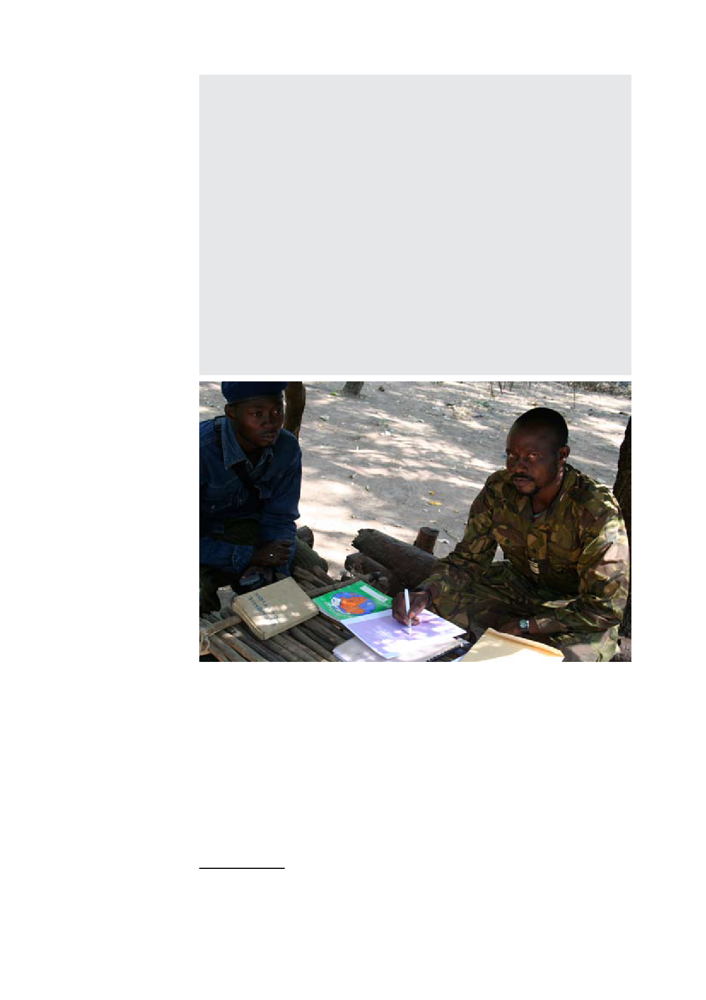

Organised bands arrive in the region with four-wheel drives and
trucks. They are heavily armed and do not tolerate priers. The
trucks bring teams of cutters with them. They leave the workers
at the cutting site to pick them up afterwards, together with the
bamboo. Sometimes, the harvest of a local (Central African)
cutter is taken by force and loaded onto the trucks. Local sources
indicate that as much as 50 trucks loaded with bamboo cross the
Sudanese border each week96.
‘Chinese bamboo’ is a popular construction material in Sudan
where it is used to build walls, roofs and furniture. There it costs
about 1 € for a stem of 5-6 meters, which is much more than in
Birao97.
It is believed that the bamboo traffickers act in complicity with the
Sudanese army98.
The FACA are aware of the problem but believe they do not have
the means to stop the traffic.
CAR
Colonel ‘Laurent’ of the APRD with an advisor (IPIS 2008)
The Northwest
The Northwest of the CAR has been the last of the three major rebel zones
to stabilise, though it is still rather turbulent. It is the home region of both the
former and the incumbent president but the two belong to a different ethnic
group, Sara and Gbaya respectively. A front line dividing the supporters and/
or ethnic group of both leaders runs through this region. It is also the most
densely populated of the rebel-held areas.
96 Interview by IPIS with inhabitant of Am-Dafock in Birao, November 2008.
97 The irony of it all is that Central Africans who want to buy their own bamboo across the border in
Sudanese Am Dafock pay even more, because they need to pay taxes to ‘reimport’ the bamboo into
their own country.
98 Interview by IPIS with FACA commander in Birao, November 2008.
32